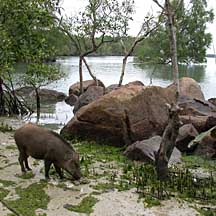
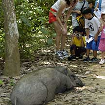
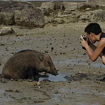
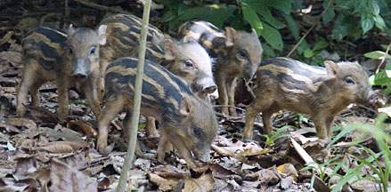
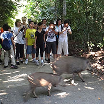

|
|
| vertebrates text index | photo index |
| Phylum Chordata > Subphylum Vertebrata > Class Mammalia |
|
Wild boar Sus scrofa Family Suidae updated Oct 2016 Where seen? This large hairy beast is quite common in our wilder places but rarely seen as they are shy. It is more active in the early morning and late evening. Several may gather under fruiting trees to forage for fallen fruits. It is the largest resident land mammal in Singapore and found in forest, scrubland and mangroves. According to Baker, it was believed to be extinct in Singapore, and current populations were probably started by individuals swimming in from Malaysia across the Johor Straits. They are found on Pulau Ubin, Pulau Tekong and the Western Catchment Area and also recorded in Changi, Lim Chu Kang and the Central Catchment Area. Globally, these wild boar are found from Europe, north Africa and most of Asia. Features: Head and body 1.5-2m, up to 200kg. Typical pig-shaped covered with bristly hairs with a mane on the neck and back that bristles upright when the animal is threatened. Adults have long canine teeth (tusks) and are generally dark greyish brown. Wild boar males are generally solitary, but females and their young live in groups. They are shy and generally avoid humans. But they can be aggressive when cornered. Mothers can be particularly dangerous when protecting their young. Wild boar can run fast. They can swim too! Boar babies: The female gives birth to a litter of up to 8 babies. She builds a nest of branches, leaves and grass to shelter her young. Infants are brown with white stripes along the body, resembling watermelons. What does it eat? It eats mainly tubers, roots and fruits. It also snacks on small animals. It may dig for roots and worms, using its strong, flexible snout. Priscilla the pig: The story goes that as an infant, she was hand raised by the villagers of Kampung Chek Jawa. When the villagers were resettled due to the impending reclamation, they could not bring her along. She stayed on Chek Jawa and seemed to be doing fine foraging in the coastal hill forest and along the seashores. Her Chinese name is 'Wei Wei', but visitors started calling her 'Priscilla the Pig'. Alas on 27 May 2004, Priscilla was found dead by NParks rangers. There was no obvious cause of death aside from "a small festering wound, and blood coming from her nostrils". She was buried where she was found, next to the access to Chek Jawa's shoreline. Her final resting place may be unmarked, but her mark on many of our hearts remains till this day. More about Priscilla on the wild shores of singapore blog. |
 Priscilla the Pig. Chek Jawa, Oct 01  Priscilla the Pig. Chek Jawa, Jun 03  Priscilla the Pig cooling off in a mud wallow. Chek Jawa, May 04 |
|
 Very young piglets, still with their stripes. Chek Jawa, Apr 12 |
 Safe closer encounters are possible! Chek Jawa, Dec 11 |
|
| Wild boar on Singapore shores |
| Photos of Wild boar for free download from wildsingapore flickr |
| Distribution in Singapore on this wildsingapore flickr map |
|
Links
References
|
|
|